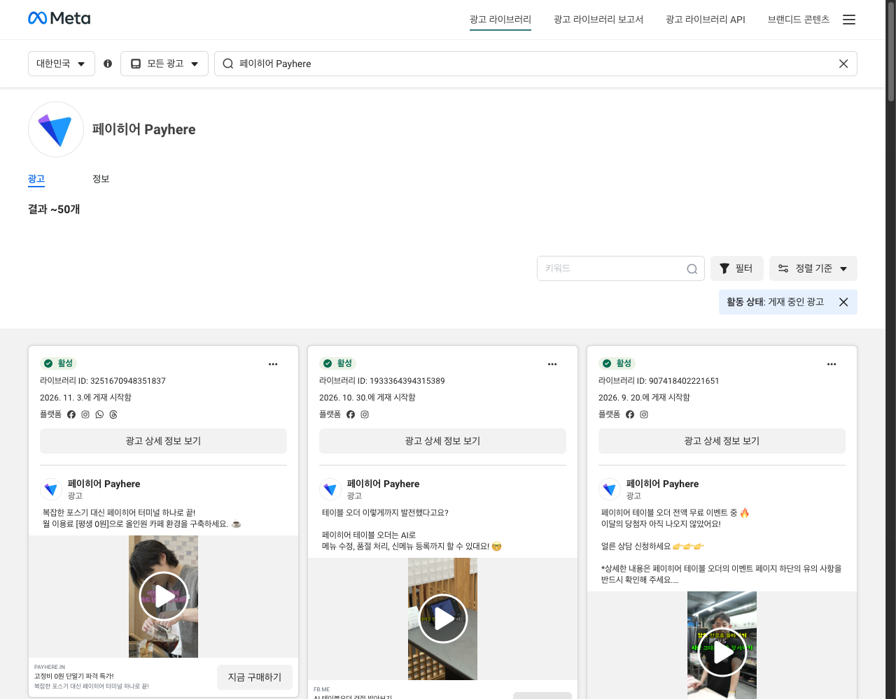
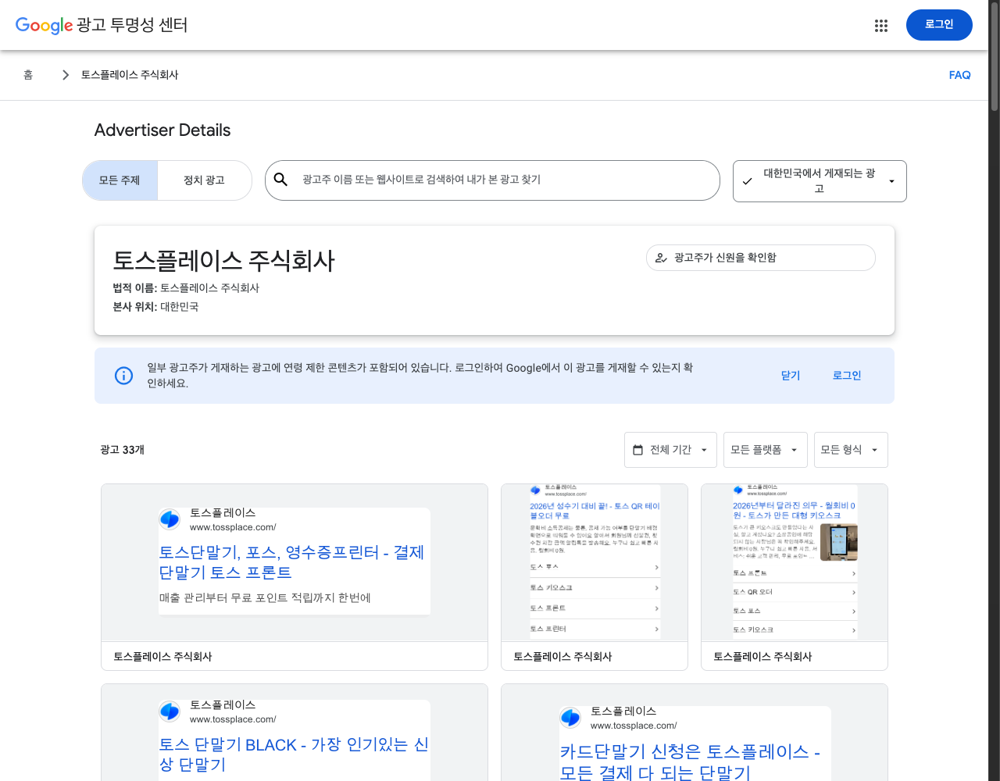
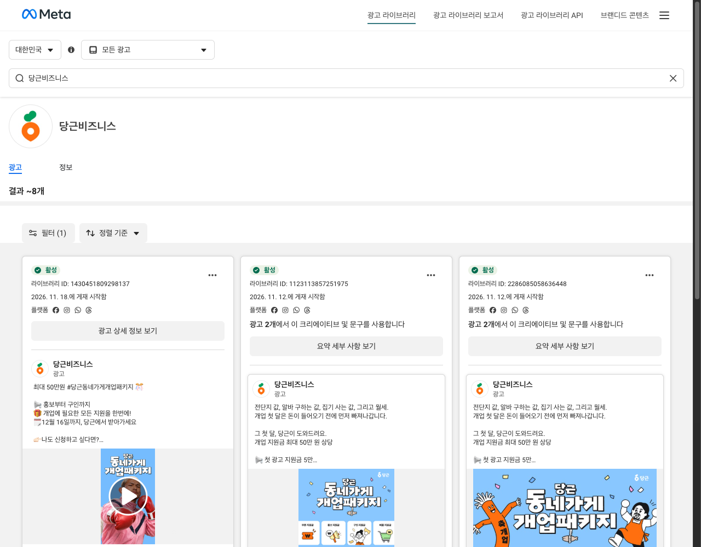
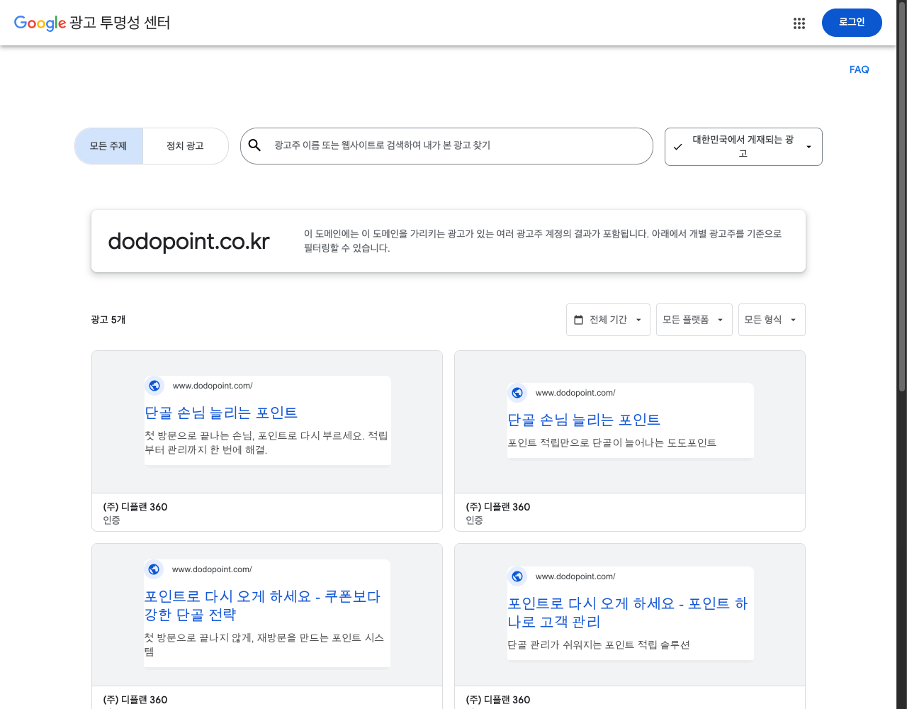

Meta 광고 라이브러리와 Google 광고 투명성 센터에서 쿠핀 핵심 경쟁사 10곳을 직접 조회한 결과입니다. 조회일 2026-11-27, 로그인 없이 화면에 보인 값만 옮겼습니다.
조회일: 2026-11-27(KST). 로그인하지 않고 조회했다. 수치는 모두 화면에 표시된 값이며, 원자료와 출처 원문은 ads.json, 화면 캡처는 shots/ads/에 있다.
| Meta 광고 라이브러리 | Google 광고 투명성 센터 | 네이버 | 카카오 | |
|---|---|---|---|---|
| 로그인 | 필요 없음 | 필요 없음(연령 제한 광고만 로그인) | – | – |
| 검색 방식 | 키워드 검색(광고 문구 안의 단어), 광고주(페이지) 검색 | 광고주명 또는 웹사이트 도메인 | 공개 조회 도구 없음 | 공개 조회 도구 없음 |
| 보이는 것 | 현재 게재 중인 광고의 소재·문구·랜딩 도메인, 게재 시작일, 노출 플랫폼(FB/IG/Audience Network/Messenger/WhatsApp/Threads), 결과 수(~N) | 광고주 법적 이름·인증 여부, 지불 주체, 기간별 광고 수, 플랫폼(검색/YouTube/쇼핑/지도/Play)별 개수, 광고별 마지막 게재일·형식·미리보기 | – | ads-transparency 경로는 광고가 나가는 파트너 지면 목록과 RTB 참여사 목록 공개용 |
| 안 보이는 것 | 한국 일반 광고의 광고비·노출수·타기팅, 종료된 광고(대한민국은 비활성 광고가 0건) | 한국 광고의 광고비·노출수 범위·타기팅, 게재 시작일, 문구 키워드 검색. 동영상 소재는 대부분 화면에 표시되지 않음 | 타사 광고·광고비 | 타사 광고·광고비 |
| '언급' 추적 | 가능. 키워드 검색에 리셀러·대리점 광고도 함께 잡힘 | 불가(광고주·도메인 단위). 대신 도메인으로 검색하면 운영사가 아닌 광고주도 잡힘 | – | – |
| API | 있지만 정치·사회 이슈 광고와 영국/EU 게재 광고만 대상. 한국 상업 광고는 나오지 않음. Facebook 계정과 신원 확인이 필요함 | 공개 API 없음. API는 EEA(유럽경제지역) 광고만 제공하고, BigQuery 데이터셋도 EEA·튀르키예 한정 | 광고주 본인 계정용 API만 있음 | 없음 |
| 자동화 | API가 막혀 있어 웹 화면 수집만 가능(약관 검토 필요). 결과는 24시간 이내에 반영됨 | 웹 화면 수집만 가능. 연속 조회하면 429 오류가 남 | 직접 검색해 캡처하는 방법뿐 | 같음 |
근거가 된 원문(전체 21개 인용은 ads.json의 evidence 항목):
Meta 개수는 대한민국·게재 중 필터를 적용한 광고주 페이지 결과 수다. Google 개수는 광고주 페이지의 '전체 기간' 광고 수이며, 인증 광고주의 광고는 마지막 게재 후 1년 동안 보관된다.
| 경쟁사 | Meta (광고주 / 활성 수) | Meta 대표 광고 | Google (광고주 / 광고 수) | Google 대표 광고 |
|---|---|---|---|---|
| 단골톡 | 페이지 있음, 0 | – | 헤드리스(주) 4 (전부 YouTube 동영상) | 동영상, 마지막 게재 2026-10-01 (내용은 화면에 표시 안 됨) |
| 토스포스 쿠폰 | 토스플레이스 ~5 | "전화 한 통이면 매장 장비 준비 끝" (FB·IG, 10/31~), 창업 패키지 250만원 응모 (FB·IG·Threads, 11/10~) | 토스플레이스 주식회사 33 (검색 20 / YouTube 30 / 쇼핑 12) | 검색광고 "토스단말기, 포스… 무료 포인트 적립까지", "토스 QR 테이블오더 무료" (마지막 게재 11/26) |
| 페이히어 | 페이히어 Payhere ~50 | "페이히어 터미널 하나로 끝! 월 이용료 평생 0원" (FB·IG·WhatsApp·Threads, 11/3~), AI 테이블오더 견적 (FB·IG, 10/30~) | 주식회사 페이히어 3 (검색 2 / YouTube 2 / 쇼핑 2) | 검색광고 "단말기 0원+포스 평생무료" (마지막 게재 8/18) |
| 도도포인트 | 도도 포인트·플레이스앤 페이지 있음, 0 | – | 운영사로는 없음. 도메인 dodopoint.co.kr로 찾으면 (주) 디플랜 360의 광고 5개 | 검색광고 "단골 손님 늘리는 포인트" (마지막 게재 6/7) |
| 단골플러스 | 페이지 있음, 0 (운영사 OKPOS는 ~3, POS 광고) | – | 없음 (오케이포스 1개, 동영상) | – |
| 내근처픽 | 없음 | – | 없음 (nearhappens.com 0) | – |
| 동네핫딜 | 없음 | – | 없음 (앱 패키지명으로는 검색 불가) | – |
| 마이쿠폰 | 없음 | – | 없음 (my-coupin-bridge.com 0) | – |
| 럭키밀 | LuckyMeal ~6 | 점주 모집 광고 "재고 남을까 봐 생산량 걱정 마세요, 입점료·월 이용료 0원" (FB·IG, 11/1~) | 모난돌컴퍼니 1 (YouTube) | 세로 동영상 "폐기에 대한 부담없이" (마지막 게재 9/9) |
| 당근 비즈프로필 쿠폰 | 당근비즈니스 ~8 (당근 본 페이지 ~1은 채용 광고) | "#당근동네가게개업패키지 최대 50만원" (FB·IG·WhatsApp·Threads, 11/18~), 개업 지원 묶음에 "손님 100명에게 천원 쿠폰" 포함 (11/12~) | 주식회사 당근마켓 57 (검색 56 / YouTube 57 / Play 32) | 동영상, 마지막 게재 11/26 |
광고비·노출수는 10곳 모두 두 도구에서 표시되지 않았다.
눈에 띈 점:
봇이 매일 스냅샷을 쌓으면 이 지표를 시계열로 볼 수 있다. Meta는 종료된 광고를 보여 주지 않으므로 이력은 직접 저장해야 남는다.
| 툴 | 출처 번호 |
|---|---|
| Meta 광고 라이브러리 | [1][2] |
| Google 광고 투명성 센터 | [3][4][5] |
| 네이버 (공개 광고 조회 도구 없음) | [6] |
| 카카오 (공개 광고 조회 도구 없음) | [7] |




전체 캡처 41장은 저장소 competitors/tracking/shots/ads/에 있습니다.
각 출처 아래 인용은 조사 때 원문에서 그대로 옮긴 문장입니다(출처당 최대 3개).
Facebook 계정이 있거나 없는 사람 누구나 광고 라이브러리를 둘러볼 수 있습니다. 하지만 광고를 신고하거나 성인용 콘텐츠를 보려면 계정이 있고 로그인되어 있어야 합니다.
현재 Meta 테크놀로지에서 게재 중인 모든 광고에는 다음과 같은 정보가 표시됩니다:
광고 게재 시작 시점, 광고를 게재한 광고주 등의 기본 정보
최근 1년 동안 영국 또는 유럽 연합에 게재된 모든 유형의 광고
API 이용 승인을 받으려면 Facebook 계정이 필요합니다.
Facebook.com/ID로 이동하여 사회 문제, 선거 또는 정치 관련 광고를 게재하는 데 필요한 확인 절차를 따르세요.
Google Ads 투명성 센터 및 광고 정보 공개 문구에는 광고주의 이름, 위치, 광고 비용을 지불하는 주체, 특정 기간 동안 게재한 광고 등 Google 플랫폼(Google 검색 및 YouTube 포함)에 광고를 게재하는 모든 광고주의 정보가 표시됩니다.
Google은 Google Ads 투명성 센터를 통해 EEA에서 게재되는 광고의 데이터에 대한 API 액세스를 제공합니다.
Google은 규제 기관 및 자율 규제 기관에 EEA 외부에 게재되는 광고에 대한 광고 투명성 센터의 기존 데이터에 대한 API 액세스 권한을 제공할 수 있습니다.
Google 검색, Play, 지도, 쇼핑, YouTube에 게재된 확인된 광고주의 광고는 마지막으로 게재된 날짜로부터 1년 동안 포함됩니다.
고객인 광고주를 위해 광고를 제작하는 광고 대행사가 아닌 광고주의 이름이 표시됩니다.
유럽과 튀르키예에 게재되는 광고 및 정치 광고는 규정으로 인해 광고의 주제와 더 많은 시청자층 설정 세부정보와 같은 추가적인 정보를 표시합니다.
region_stats (top level) - Collection of regions in which the ad served (in the European Economic Area and Turkey) and their relevant stats
네이버는 검색광고/디스플레이광고 이용약관 및 운영정책에 따라 운영되며, 모든 광고는 광고등록기준에 따라 검토됩니다.
네이버 서비스의 광고 노출 사유
카카오 광고는 카카오와 제휴 관계에 있는 파트너사 서비스 지면을 통해 노출될 수 있습니다.